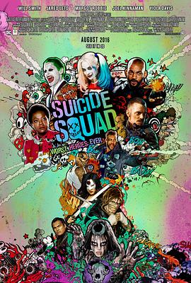

自杀小队 / Suicide Squad
又名：X特遣队 / 自杀特攻：超能暴队(港) / 自杀突击队(台) / 犯罪敢死队 / Task Force X / Bravo 14
白瞎这个设定
作品信息
| 导演 | 大卫·阿耶 |
| 编剧 | 大卫·阿耶 / 约翰·奥斯特兰德 |
| 主演 | 威尔·史密斯 / 杰瑞德·莱托 / 玛格特·罗比 / 乔尔·金纳曼 / 维奥拉·戴维斯 / 本·阿弗莱克 / 杰·科特尼 / 卡拉·迪瓦伊 / 杰伊·埃尔南德斯 / 斯科特·伊斯特伍德 / 阿德沃尔·阿吉纽依-艾格拜吉 / 埃兹拉·米勒 / 科曼 / 亚当·比奇 / 吉姆·帕拉克 / 伊克·巴里霍尔兹 / 亚历克斯·梅拉兹 / 凯伦·福原 / 大卫·哈伯 |
| 类型 | 动作 / 犯罪 / 奇幻 |
| 制片国家/地区 | 美国 |
| 语言 | 英语 / 日语 / 西班牙语 |
| 上映日期 | 2016-08-05(美国) |
| 片长 | 123分钟 / 134分钟(加长版) |
| IMDb | tt1386697 |
最后一次看到是 2026-08-12T21:12:17+08:00 · 豆瓣原页